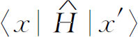

＝10－10
m）处，或者3
＝10－10
m）处，或者3 或4
或4 处呢？无疑有许多位置可供氮原子占据。又如当我们谈到氢分子离子时（在此离子中两个质子共有一个电子），我们想象了两个基础态：一个态是电子在第1号质子附近，另一个态是电子在第2号质子附近。显然我们略去了许多细节。这个电子并不是正好位于第2号质子处，而只是在它附近，它可能在这个质子上面的某个地方，或者下面、左面、右面的某个地方。
处呢？无疑有许多位置可供氮原子占据。又如当我们谈到氢分子离子时（在此离子中两个质子共有一个电子），我们想象了两个基础态：一个态是电子在第1号质子附近，另一个态是电子在第2号质子附近。显然我们略去了许多细节。这个电子并不是正好位于第2号质子处，而只是在它附近，它可能在这个质子上面的某个地方，或者下面、左面、右面的某个地方。现在我们将议论量子力学的概率幅在空间是如何变化的。在前面几章中，你们可能对有些事情被忽略感到不太舒服。例如，当我们谈论氨分子时，我们选取了两个基础态来描述它。我们选择氮原子处于3个氢原子所构成的平面之“上”的情形作为一个基础态，氮原子处于3个氢原子所构成的平面之“下”的情形作为另一个基础态。为什么我们仅仅挑选这样两个基础态呢？为什么氮原子就不可能处于3个氢原子所构成平面之上2
（1
＝10－10
m）处，或者3
或4
处呢？无疑有许多位置可供氮原子占据。又如当我们谈到氢分子离子时（在此离子中两个质子共有一个电子），我们想象了两个基础态：一个态是电子在第1号质子附近，另一个态是电子在第2号质子附近。显然我们略去了许多细节。这个电子并不是正好位于第2号质子处，而只是在它附近，它可能在这个质子上面的某个地方，或者下面、左面、右面的某个地方。
以前我们故意避免讨论这些细节。我们说，我们只是对问题的某些特征感兴趣，所以我们想象当该电子在第1号质子附近时，它就处于某种相当确定的状态。电子处于这个状态时，在质子周围找到它的概率应有某种相当确定的分布，但是我们对此细节不感兴趣。
我们也可以用另一种方法处理这个问题。在我们关于氢分子离子的讨论中，当我们用两个基础态来描述这种情况时，我们采用的是一种近似描述法。实际上存在着许许多多这样的状态。处于质子周围的电子可以占据最低的能量状态，即基态，但是也还存在着许多激发态。对于各个激发态来说，电子在质子周围的分布各不相同。过去我们忽略了这些激发态，说是感兴趣的只是低能量的情形。然而正是这些激发态提供了电子在质子周围各种不同分布的概率。如果我们希望详细地描述氢分子离子，我们就必须把这些可能的基础态也考虑进去，要做到这一点可以有几种方法，一种方法就是去详细地考虑那些较仔细地描述电子在空间位置的状态。
现在我们准备考虑一个比较复杂的程序，通过给出在一定条件下在任何地方找到电子的概率幅，我们就能够详细地讨论电子的位置。这个比较完整的理论为我们以前讨论中所用的近似方法提供了基础。在某种意义上，我们可以把前面的方程作为这种更完整的理论的一种近似而推导出来。
你们可能会感到奇怪，为什么我们不一开始就采用较完整的理论，在讨论过程中再作近似处理。我们感到，从双态近似开始，逐步建立更完善的理论，比起用相反的方式来处理这一问题，更容易使你们理解量子力学的基本机理。正是由于这一原因，我们处理问题的次序和你们在许多书上看到的相反。
当我们深入研究本章的课题时，你们将会注意到我们正在打破我们以往一直遵循的一个规则。无论我们在研究哪一个课题时，总是试图或多或少给出完善的物理描述——尽可能详细地告诉你们这观念通向何处。我们一直既试图去描述理论的一般结果，又试图描述某些具体的细节，从而使你们能看出理论会把我们引向何方。我们现在要打破这个规则，将叙述怎样才能谈论空间的概率幅，并向你们介绍它们所满足的微分方程，而没有时间去继续讨论由这个理论导出的许多明显包含的内容。的确，我们甚至不可能更进一步将这个理论与我们早先使用的某些近似公式（例如关于氢分子和氨分子的近似公式）联系起来。就这一次，我们只好不把讨论进行到底。我们的课程即将结束，只能满足于试图向你们介绍一般的概念以及指出我们至今一直在描述的方法和研究量子力学课题的其他方法之间的关系。我们希望给你们足够的观念，使你们能够自己进行学习，并通过阅读各种书籍学到与我们即将描述的问题有关的许多含义。我们毕竟得留些内容将来再学。
让我们再来复习一下已求出的关于一个电子如何沿原子线列运动的问题。当一个电子具有从一个原子跃迁到相邻原子的振幅时，存在着具有确定能量的状态，在这些态中找到电子的概率幅是以行波的形式沿晶格分布的。对于长波长——即对于波数k 之值小的情况——态的能量与波数的平方成正比。对于间隔为b 的晶格，其中电子在单位时间内从一个原子跃迁到相邻原子的振幅为 ，态的能量与k （对于小的k b ）的关系为
（参见§13-2。）我们也已知道，具有相似能量的这样一群波会形成一个波包，这个波包的行为与一个具质量m 有效 的经典粒子很相似，m 有效 为
既然晶体中的概率幅波行为像一个粒子，我们完全可以期望：一个粒子的一般量子力学描述应显现出我们对晶格观察到的相同类型的波的行为。假定我们考虑的晶格在一直线上，并且想象晶格间隔b 越来越小。在极限情况下我们会想到电子可以处在该直线的任何地方。我们就过渡到概率幅连续分布的情况。这样我们就有沿此直线在任何地方找到一个电子的振幅。这是描述一个电子在真空中运动情况的一种方法。换句话说，如果设想空间能够用无限个非常靠近的点标记出来，并能求得表示一点的振幅与相邻点振幅之间关系的方程，我们就得到了一个电子在空间运动的量子力学定律。
让我们先回想一下某些量子力学的一般原理。假定一个粒子可以存在于一个量子力学系统各种不同的条件中，我们把任何一个可以在其中找到电子的特殊情况称为“态”，并用态矢量例如｜φ 〉来表示。其他一些态可以用别的态矢量，例如｜ψ 〉来表示。我们然后引进基础态的概念，说有一组态｜1〉，｜2〉，｜3〉，｜4〉等等，它们具有如下性质：
第一，所有这些态都是完全不同的——我们说它们是正交的。所谓正交意思是指对于任意两个基础态｜i 〉和｜j 〉，表示一个已知处在态｜i 〉的电子同时又处在态｜j 〉的振幅〈i ｜j 〉等于零——当然除非｜i 〉和｜j 〉代表同一个态。我们将此符号表示为
你们应记住，若i 与j 不等，则δ ij ＝0；若i 和j 相等，则δ ij ＝1。
第二，这些基础态｜i 〉必定是一个完全集，所以任何态都能用它们表述。这就是说，任何态｜φ 〉都可以由给定的所有振幅〈i ｜φ 〉完整地描述，〈i ｜φ 〉是处在态｜φ 〉的一个粒子也会在态｜i 〉找到的振幅。事实上，态矢量｜φ 〉等于各基础态乘上一个系数后的和，这系数就是态｜φ 〉也处在态｜i 〉的振幅，即
最后，如果我们考虑任何两个态｜φ 〉和｜ψ 〉，那么要求态｜ψ 〉也同时处在态｜φ 〉的振幅，可以先将态｜ψ 〉投影到各基础态上，然后再将每个基础态投影到态｜φ 〉上而求得。我们把这写成如下形式：
式中的求和当然是对整个基础态｜i 〉的集进行的。
在第13章中，当我们计算位于一直线排列的原子中的电子情况时，我们曾选取过一组基础态，在这些态中电子总被定域于直线上的这个或那个原子上。基础态｜n 〉代表电子被定域在第“n ”个原子上的情形。（当然，我们把基础态称为｜n 〉而不称为｜i 〉并没有什么特别的意义。）接着，我们发现用原子的坐标x n 要比用原子在排列中的数字编号表示基础态来得方便。态｜x n 〉只是书写态｜n 〉的另一种方法。然后，遵循一般规则，任何态，比方说｜ψ 〉，处于｜ψ 〉态的电子也可以用在态｜x n 〉中的一个的振幅来描述。为方便起见，我们选用符号C n 代表这些振幅
既然，这些基础态与直线上的位置有关，我们可把振幅C n 看作是坐标x 的函数，并把它写成C （x n ）。一般来说，振幅C （x n ）将随时间而改变，因此它也是t 的函数。通常我们并不费力气去把这种对时间的依赖关系明显地表示出来。
于是我们在第13章中提出：振幅C （x n ）将以哈密顿方程［式（13.3）］所描述的方式随时间变化。用我们的新符号，该方程为
上式右边最后两项代表位于第（n ＋1）个原子或第（n －1）个原子的电子可以输送至第n 个原子的过程。
我们发现式（16.7）具有与确定能量的状态相对应的解，我们把这些解写成
对于那些低能量的状态来说，波长较长（k 较小），且能量与k 的关系为
或者，我们这样选取能量的零点，使E 0 －2A ＝0。那么能量就由式（16.1）给出。
现在我们来看看，要是让晶格间隔b 趋于零，但保持波数k 不变，可能会发生些什么。如果所发生的只是上述情况，则式（16.9）中的最后一项正好为零，那就没有物理意义了。但是假如A 和b 一起变化，以至当b 趋于零时乘积A b 2 保持恒定 (1) ——应用式（16.2），我们将把Ab 2 写成常数 。在这些情况下，方程式（16.9）将不发生变化，但是微分方程式（16.7）会出现什么情况呢？
首先，我们把方程式（16.7）改写成
对于我们所选取的E 0 ，上式第一项为零。其次，我们可以想象一个连续函数C （x ），它平滑地联接每个x n 处C （x n ）的固有值。当间隔 b 趋向于零时 ，这些点x n 越来越紧密地靠在一起，而（如果我们使C （x ）的变化相当平滑的话）在括号中的量正好同C （x ）的两阶微商成正比，将每一项作泰勒展开后，我们可以写出下列等式
然后，在取b 趋于零的极限条件下，保持b 2 A 等于k ，则式（16.7）变成
我们就得到了一个方程，它告诉我们：C （x ）——在x 处找到电子的振幅——的时间变化率与在相邻点找到电子的振幅有关，它正比于该振幅对位置的两阶微商。
关于电子在自由空间运动的正确的量子力学方程最早是由薛定谔发现的。对于沿一直线运动的电子来说，如果用该电子在自由空间的质量m 代替m 有效 ，则正确的量子力学方程就和式（16.12）的形式完全一样。在自由空间中沿一直线运动的电子，薛定谔方程为：
我们无意使你们认为我们已经导出了薛定谔方程，而只是希望告诉你们一种思考这个问题的方法。当薛定谔第一次写出这个方程式的时候，他的推导是建立在启发性的论证和卓越的直觉猜测上的。他所使用的某些论证甚至是错误的，但是这并没有什么关系，唯一重要的是这个最终的方程给出了对自然界的正确描述。我们讨论这问题的目的，只是想告诉你们，正确的、基本的量子力学方程式（16.13）和你们在电子沿着原子线列运动的极限情况下所得到的方程具有相同的形式。这意味着我们可以把式（16.13）中的微分方程看作是描述概率幅沿此直线从一点到相邻一点的扩散。也就是说，如果一个电子在某一点具有某个振幅，则过一会，它会在邻近一点具有某个振幅。事实上，这个方程看起来有点像我们在第1卷中所用的扩散方程。但是存在着一个主要的区别：时间微商前的虚系数使得此方程的性质与普通的扩散（诸如气体沿一细管扩散的情况）完全不同。普通扩散给出实指数的解，而式（16.13）的解却是复波。
现在你们对要讨论的将是些什么问题已有了一些概念，我们想从头再来研究描述一个电子沿一直线运动的问题，而不去考虑与晶格上原子有关的态。我们要从头开始来看看：如果要描述一个自由粒子在空间的运动，我们必须用些什么概念。既然我们对沿一连续直线运动的粒子的行为感兴趣，那就要处理无数个可能的态，你们将会看到，对于我们为处理有限数目的态而发展起来的概念需要作出某些技术性的修正。
我们从设态矢量｜x 〉代表一个粒子精确地定位在坐标x 处的态着手。对于沿直线的每一个x 值，例如1.73或9.67或10.00，都有一个相应的态，我们将取这些态｜x 〉作为基础态，而且，要是包括直线上的所有点，我们就有了一维运动的、一个完全集。现在假定我们有一个不同类型的态，譬如｜ψ 〉，在该态中一个电子以某种方式沿此直线分布。描述这种态的一个办法是：给出在每一个基础态｜x 〉找到电子的所有振幅。每个x 值一个振幅，我们必须给出这些振幅的一组无限集合。我们把这些振幅写成〈x ｜ψ 〉。每个这样的振幅都是一个复数，由于对每个x 值都有这样一个复数，所以振幅〈x ｜ψ 〉必定是x 的函数，我们也把它写成C （x ），
当我们在第7章中谈到振幅随时间的变化时，我们已经考虑过这种以连续的方式随坐标变化的振幅。例如，我们在那里曾证明，具有确定动量的一个粒子，它在空间的振幅必定具有特定的变化形式。如果一个粒子具有确定的动量p 及相应确定的能量E ，则在任何位置x 找到该粒子的振幅就像
这个方程式表达了量子力学的一个重要的普通原理，它把与空间不同位置相对应的基础态与另一个基础态系统，即所有具有确定动量的态联系了起来。对于某些类型的问题来说，使用具有确定动量的态往往比用x 表示的态更加方便。当然，对于描述量子力学情况，这两组基础态都同样适用。我们在后面还要回过头来讨论这两种态之间的关系。目前我们希望把讨论限于用态｜x 〉来描述的方法。
在作进一步讨论之前，我们要稍微改变一下符号，并希望不至于引起太大的混淆。式（16.14）定义的函数C （x ）的表示式当然与我们所考虑的那个态｜ψ 〉有关，我们应该用某种方式把这种关系表示出来。我们可以用一个下标，例如C ψ （x ），来表明我们所讨论的是哪一个函数C （x ）。虽然这将是一个完全令人满意的符号，但是它有点麻烦，并且在大多数书中都不采用它。大多数人就直接省去字母C ，而只用符号ψ 来定义这个函数
既然世界上其他人都使用这个符号，你们也会习惯它，你们在别的地方遇到它时也不会被吓住。然而要记住，我们现在有两种不同的使用ψ 的方式。在式（16.14）中ψ 代表我们给予电子的某一特定物理状态的标记。另一方面，在式（16.16）的左边，符号ψ 被用来定义一个x 的数学函数，它等于与沿直线上每一点x 相联系的振幅。我们希望你们一旦习惯了这个概念后不会引起太多的混淆。顺便指出：函数ψ （x ）通常称为“波函数”——因为它多半具有其变量的复波形式。
既然我们已经把ψ （x ）定义为处在态ψ 的电子在位置x 处的振幅，那么就希望把ψ 的绝对值平方解释为在位置x 处找到一个电子的概率。遗憾的是，严格说来在任何特定位置上找到一个电子的概率是零。一般说来，电子将“弥散”在线上的某个区域中，而且，由于任何一小线段上存在无数个点，因此电子在任何一点的概率不可能是有限数值。我们只能用概率分布 (2) 来描述找到一个电子的概率，概率分布 给出了在直线上各个位置附近找到这个电子的相对 概率。让我们用prob（x ，Δx ）这个符号来代表位于x 附近很小间隔Δx 中找到电子的机会。如果我们采用在任何物理情况下都足够小的尺度，则概率就会随位置平滑地变化，而在任何小的有限线段Δx 中找到电子的概率将与Δx 成正比，我们可以按此考虑来修改我们的定义。
我们可以把振幅〈x ｜ψ 〉看作是表示所有基础态｜x 〉在一小范围内的一种“振幅密度”。既然在x 处的小间隔Δx 中找到一个电子的概率应该与间隔Δx 成正比，我们可以这样来选取〈x ｜ψ 〉的定义，使下述关系成立：
因此振幅〈x ｜ψ 〉就与处在态｜ψ 〉的一个电子在基础态｜x 〉中被找到的振幅成正比，而比例常数这样选取，使得振幅〈x ｜ψ 〉的绝对值平方给出在任何小范围内找到一个电子的概率密度。我们可以等效地写成
现在我们必须对前面的某些方程作些修改，使它们与这个新定义相协调。假定一个电子处在｜ψ 〉态，而我们希望知道在另一个不同态｜φ 〉中找到此电子的振幅，态｜φ 〉可能对应于该电子的另一个不同分布状况。以前当我们谈论一组有限的分立状态时，我们就用式（16.5）。在修改我们的振幅定义前我们把这振幅写成
现在如果这些振幅按我们以前所叙述的方法来归一化，那么在x 处小范围内所有状态的和就相当于乘以Δx ，而对所有x 值求和就变为对x 的积分。用我们修改过的定义，这个振幅的正确形式为
振幅〈x ｜ψ 〉就是我们现在所说的ψ （x ），同样地，我们也选取φ （x ）来表示振幅〈x ｜φ 〉。请记住，〈φ ｜x 〉是〈x ｜φ 〉的复共轭，我们可以把式（16.19）写成
按照我们的新定义，如果我们用对x 的积分来代替对x 的求和，则所有一切都遵从与以前相同的公式。
对上面我们所说的还应提出一个限制。如果我们要用任何一组合适的基础态来充分地描述所发生的情况，则这组基础态必须是完全的。对于一个一维电子来说，仅仅用基础态｜x 〉来描述其实是不够完善的，因为对于每个这样的态中的电子，其自旋可以向上或向下，获得一个完全集的一种办法是在x 处取两组态，一组对应于向上的自旋，一组对应于向下的自旋。不过，目前我们不必为这种复杂的情形而操心。
假定我们有一个电子，它处在用概率幅〈x ｜ψ 〉＝ψ （x ）描写的态｜ψ 〉中。我们知道电子处于这个态时以一定的分布展开在直线上，从而在位置x 处小间隔Δx 中找到电子的概率正好为
关于这个电子的动量，我们能讲些什么呢？我们要问，这个电子具有动量p 的概率是多大？让我们从计算态｜ψ 〉在另一个态｜动量p 〉中的振幅开始，我们定义态｜动量p 〉为具有确定动量p 的态。利用关于振幅分解的基本方程式（16.19），我们可以求得这个振幅。按态｜动量p 〉的定义，我们得
该电子具有动量p 的概率应由这个振幅绝对值的平方给出。然而，我们又遇到了归一化的小问题。一般说来，我们所能问的只是在动量p 附近dp 的小范围内找到具有该动量的电子的概率。动量严格为某值p 的概率必定为零（除非这个态｜ψ 〉恰巧是一个具有确定动量的态）。只有当我们问到在动量p 附近的小范围dp 内找到这电子的概率时，我们才会得到一个确定的概率。有好几种办法适用于使它归一化，我们选一种我们认为最方便的办法，不过这在目前对你们来说可能不是显而易见的。
我们所作的归一化使概率与振幅的关系满足
振幅〈动量p ｜x 〉的归一化就按这个定义来确定。当然，振幅〈动量p ｜x 〉正好是振幅〈x ｜动量p 〉的复共轭，而〈x ｜动量p 〉又正是我们在式（16.15）中所写的式子。采用这种归一化，指数前面那个适当的比例常数正好为1，即
于是式（16.21）变为
这个方程加上式（16.22）就能使我们对任何态｜ψ 〉求出动量分布。
让我们来看一个特殊的例子——例如一个电子定域在x ＝0附近某一区域内。假定我们采用如下形式的波函数：
那么这个波函数在x 处的概率分布是上式绝对值的平方，即
式中的概率密度函数P （x ）是如图16-1所示的高斯曲线。大部分概率集中在x ＝＋σ 和x ＝－σ 之间。我们说这个曲线的“半宽度”为σ 。（更精确地说，σ 等于某事物按此分布弥散时其坐标x 的方均根值。）通常，我们这样选取常数K ，使概率密度P （x ）不仅与在x 处单位长度内找到电子的概率成正比，而且具有这样的标度，使P （x ）Δx 等于 在x 附近Δx 范围内找到电子的概率。可以令 来确定常数K ，因为在整个区域内找到电子的概率必定为1。这里，我们得到K ＝（2π σ 2 ）－1/4 。（我们用了公式 ，参见第1卷§40-4。）

图16-1 式（16.25）中波函数的概率密度
现在我们来求动量分布。令φ （p ）代表找到具有动量p 的电子的振幅，
将式（16.25）代入式（16.24），得：
上述积分也可改写成
现在作代换 ，这个积分就为
，这个积分就为
（数学家们可能会反对我们在这里的推导方式，但不管怎么说，结果是正确的。）
我们得到了一个有趣的结果，即对p 的振幅函数与x 的振幅函数具有相同的数学形式，只是高斯分布的宽度不同。我们可以把上式写成
式中p 分布函数的半宽度η 与x 分布函数的半宽度σ 有下列关系
我们所得结果表明：如果使σ 变小，从而使对x 的分布宽度变得很小，那么η 就变得很大，对p 的分布就散布得非常宽。或者反过来说，如果我们有一个对p 的狭窄的分布，它必然对应着一个对x 的散开的分布。要是我们愿意，可以把η 和σ 看作是处在我们所研究状态中的电子之位置和动量区域的不确定性的某种量度。如果我们把η 和σ 分别称为Δp 和Δx ，则式（16.33）变为：
有意思的是，可以证明对于x 或p 的任何其他形式的分布来说，乘积Δp Δx 不会比我们这里得到的小。高斯分布给出了均方根宽度乘积的最小可能值。一般我们可以说
这就是海森伯的不确定性原理的定量表述，对此，我们以前已多次作过定性讨论。通常我们作这种近似表述：乘积Δp Δx 的最小值与 有相同的数量级。
当涉及基础态的连续问题时，就需要对我们的基本方程进行修改，现在就来讨论这个问题。当我们所讨论的是有限数目的分立态时，这一组基础态必须满足的基本条件为：
如果一个粒子处在一个基础态中，那么它处在另一个基础态中的振幅就为零。通过选取适当的归一化条件，我们定义振幅〈i ｜i 〉为1。这两个条件由式（16.36）描述。现在来看看，当用｜x 〉表示在一条直线上的粒子的基础态时，这个关系应如何修改。如果已知这个粒子处在基础态之一｜x 〉中，则它同时处在另一个基础态｜x ′〉的振幅是多少呢？如果x 和x ′是沿直线上两个不同的位置，那么振幅〈x ｜x ′〉肯定为0，从而与式（16.36）一致。但是如果x 和x ′相同，而振幅〈x ｜x ′〉将不为1，则仍旧是因为老的归一化问题。为了看清楚我们必须怎样来补救这个问题，回到式（16.19），并把此式用到态｜φ 〉正好是基础态｜x ′〉的特殊情况中去。于是我们得
振幅〈x ｜ψ 〉正好就是函数ψ （x ）。同样，既然振幅〈x ′｜ψ 〉是指相同的态ψ 而言的，因此它是变量x ′的相同的函数，即ψ （x ′）。于是我们可以把式（16.37）改写成

这个方程必须对任何态｜ψ 〉都成立，因而对任意函数ψ （x ）也成立。这个条件将完全确定振幅〈x ｜x ′〉的性质——当然，〈x ｜x ′〉只是与x 和x ′有关的函数。
现在我们的任务是找到一个函数f （x ，x ′），当把它乘以ψ （x ），并对所有x 积分后正好给出量ψ （x ′）。结果发现没有一个数学函数能做到这点！至少没有一个我们通常所说的“函数”可以满足这点。
假定我们把x ′取为一个特殊数目0，并定义振幅〈0｜x 〉为x 的某个函数，譬如说f （x ）。于是式（16.36）就为：
何种类型的函数f （x ）才能够满足这个方程呢？既然这个积分必须与x 不为0时ψ （x ）的值无关，所以很明显，对于x 不为0的所有值，f （x ）必定为0。但是若f （x ）处处为0，则积分也将为0，因而式（16.39）不会被满足。所以我们遇到了一个不可能的情形：我们希望有一个函数，除了一点外处处为0，但是其积分仍为有限值。既然我们找不到一个具有这种性质的函数，最方便的出路就是宣称 函数f （x ）就是由式（16.39）定义 的。也就是说f （x ）是能使式（16.39）正确成立的函数。这个函数最早是由狄拉克发明的，所以就用他的名字来命名。我们把它写成δ （x ）。所有我们说的是函数δ （x ）具有这样的奇怪性质，就是以它代替式（16.39）中的f （x ），则积分就取x 为0时的ψ （x ）的值，而且既然这积分与所有x 不等于0的ψ （x ）值无关，函数δ （x ）必定除x ＝0的点外处处为0。总括起来，我们写成：
式中δ （x ）由下式定义
注意，如果我们采用特殊的函数“1”作为式（16.41）中的函数ψ ，那么我们就得到
这就是说，函数δ （x ）具有这样的性质：除了x ＝0外它处处为0，但是具有等于1的有限积分。我们必须把这函数δ （x ）想象成在某一点为奇特的无穷，使总面积等于1。
想象狄拉克δ 函数的一种方法是设想一系列的矩形——或者你愿意想象的任何峰函数——它变得越来越窄，越来越高，但始终保持面积为1，如图16-2所示。这函数从－∞到＋∞的积分恒为1。如果你们将它乘以任何函数ψ （x ），然后对这个乘积进行积分，那么你们就会近似地得到这个函数ψ （x ）在x ＝0处的值，当你使用的长方形越来越窄，这一近似就越来越好。如果你们愿意的话，就可以用这种类型的极限过程来想象δ 函数。但是，唯一重要的事情是：δ 函数被定义为使得式（16.41）对每一个可能的函数ψ （x ）都成立。这就唯一地定义了δ 函数。它的性质如上所述。
图16-2 一组面积都为1的函数，看上去越来越像δ （x ）
如果我们把δ 函数的自变量从x 变成x －x ′，那么相应的关系式为：
如果我们用δ （x －x ′）来代替式（16.38）中的振幅〈x ｜x ′〉，那么该方程被满足。于是我们的结果是：对x 的基础态来说，与式（16.36）相对应的条件为
现在我们已经完成了对我们的基本方程所作的必要的修改，在处理对应于直线上那些点的连续基础态问题时需要这些方程。可以直接把这种修改推广到三维的情况。首先我们用矢量 r 代替坐标x ，然后把对x 的积分变成对x ，y 和z 的积分，换句话说，变成体积分。最后，一维δ 函数必须被3个δ 函数的乘积即δ （x －x ′）δ （y －y ′）δ （z －z ′）来代替，其中一个以x 、一个以y 、另一个以z 为变量。把以上这些步合在一起，我们就得到在三维空间中粒子振幅的如下一组方程：
如果粒子多于一个将会发生什么情况呢？我们将告诉你们如何处理两个粒子系统的问题，你们就会很容易地看出，如果要处理粒子数目很多的系统时必须做些什么。假定有两个粒子，我们称之为粒子1和粒子2。用什么作为基础态呢？一组能描述这一系统的完美的态为：粒子1处在x 1 和粒子2处在x 2 ，我们把这个态写成｜x 1 x 2 〉。请注意，只对一个粒子位置的描述不能定义为基础态 。每个基础态必须确定整个系统的情况。我们决不可认为每个粒子都是独立地像波一样在三维空间中运动。任何一个物理态｜ψ 〉，可以通过给出在x 1 和x 2 处找到两个粒子的所有振幅〈x 1 ，x 2 ｜ψ 〉而确定下来。因此这个广义振幅是两组 坐标x 1 和x 2 的函数。你们可以看出这样的函数并不是在三维空间中传播的振动这种意义上的波。它一般也不只是两个单独的波——每个粒子一个波——的简单乘积。总的来说，它是由x 1 和x 2 所定义的六维空间中的某种波。如果在自然界中存在着两个具有相互作用的粒子，那么我们无法通过试图写出其中一个粒子单独的波函数来描述它发生的过程。我们在前面几章中所讨论的这个著名的佯谬——对一个粒子作测量就可以告知另一个粒子遭遇的事情，或者会破坏两粒子的干涉——已经给人们带来了种种麻烦，因为他们只愿意考虑单独一个粒子的波函数，而不愿去想象以两个粒子的坐标为变量的正确波函数。只有用两个粒子坐标的函数，才能正确地给出完整的描述。
到目前为止，我们只是为如何描述涉及一个可以位于空间各处的电子这样的态而操心，现在我们得为如何描述在各种情况下可能发生的物理问题而操心了。和前面一样，我们必须解决态如何随时间变化的问题。如果我们有一个态｜ψ 〉，经一段时间后转变成了另一个态｜ψ ′〉，那么我们只要使波函数——它就是振幅〈 r ｜ψ 〉——不仅是坐标的函数而且是时间的函数就可描述所有时刻的情况。于是我们可以用一个随时间变化的波函数ψ （ r ，t ）＝ψ （x ，y ，z ，t ）来描写在给定情况下的一个粒子。这个随时间变化的波函数描述了随着时间的进展而出现的态的相继变化。这个所谓的“坐标表象”给出了态｜ψ 〉在基础态｜ r 〉上的投影，它应用起来不一定总是最方便的，但是我们将首先讨论它。
在第8章中我们曾用哈密顿H ij 描述态如何随时间变化。我们看到各种振幅的时间变化是用矩阵方程
给出的。这方程告诉我们：每个振幅C i 的时间变化与所有其他的振幅成正比，比例系数为H ij 。
当我们用连续基础态｜x 〉时，式（16.49）是怎样的呢？首先让我们记住，式（16.49）也可写成
现在我们很清楚该怎么做。对x 表象来说，我们认为
对基础态｜j 〉的求和为对x ′的积分所代替。既然 应是x 和x ′的某个函数，我们就可把它写成H （x ，x ′）——它相当于式（16.49）中的H ij 。于是式（16.50）与式
相同，其中
根据式（16.51），ψ 在x 处的变化率与ψ 在所有各点x ′处的ψ 值有关；因子H （x ，x ′）是单位时间内电子从x ′跃迁到x 处的振幅。然而，结果是：在自然界中，除了非常靠近x 的那些点x ′以外，这个振幅总为0 。这就意味着——正如我们在本章开始所举的原子链的例子（式（16.12））中所看到的那样——式（16.51）的右边可以用在x 处的ψ 和ψ 对x 的微商完全表示出来。
对于一个不受力的作用和不受干扰而在空间自由运动的粒子来说，正确的物理定律是
这一式子我们是从什么地方得来的呢？没有地方。我们不可能从我们已知的任何事情中导出这个式子，它来源于薛定谔的头脑，是薛定谔在致力于了解对真实世界的各种实验观察的过程中发明的。你们想想我们从研究晶体中电子的传播而导出式（16.12）的过程，或许会获得上式为什么会是这种形式的某些线索。
当然，自由粒子并不十分令人兴奋。如果我们对粒子施以作用力，将会发生些什么呢？如果粒子所受的力可以用标势V （x ）来描写——这意味着我们考虑的是电力而不是磁力——如果我们只考虑低能的情况，从而可以忽略那些由相对论性的运动所引起的复杂性，于是适合真实世界的哈密顿给出
同样，要是你们回顾一下电子在晶体中的运动，你们就可以对这个方程的来源获得一些线索；而且，如果从一个原子位置到另一个原子位置电子的能量变化很慢——如果对晶体加上电场，就会出现这种情况——那么你们知道方程要如何修改。这样，式（16.7）中的项E 0 将随位置缓慢变化，并与式（16.52）中我们所加的新项相对应。
［你们可能感到奇怪，为什么我们直接从式（16.51）到式（16.52），而不是给出关于振幅 的正确函数形式。我们这样做是因为：虽然式（16.51）右边的整个积分用我们习惯的方式表示，但是H （x ，x ′）只能写成奇特的代数函数。如果你们实在好奇的话，我们可以把H （x ，x ′）写成如下形式：
式中δ ″表示δ 函数的二阶微商。这个相当陌生的函数可以用一个稍微方便些的代数微分算符来代替，它是完全等效的：
我们不用这些形式，而直接利用式（16.52）的形式。］
现在，如果我们对式（16.50）中的积分采用式（16.52）中的表示式，那么我们就对ψ （x ）＝〈x ｜ψ 〉得到下列微分方程式：
如果我们对三维空间中的运动感兴趣，那么我们很清楚应该用什么方程来代替式（16.53）。唯一的改变是用
来代替 ，以及用V （x ，y ，z ）代替V （x ）。对于一个在势场V （x ，y ，z ）中运动的电子来说，其振幅ψ （x ，y ，z ）所遵循的微分方程为
上式称为薛定谔方程，是第一个为人所知的量子力学方程。在本书中我们提到的其他量子力学方程被发现之前，薛定谔就写下了这个方程。
虽然我们是沿着完全不同的途径来探讨这一问题的，但是标志物质量子力学描述诞生的伟大历史时刻是1926年薛定谔第一次写出他的方程之时。许多年中，物质内部的原子结构曾经是个巨大的谜。没有人能理解是什么原因使物质结合在一起，为什么会有化学键联，特别是原子怎么会是稳定的。虽然玻尔已经能够描述氢原子中电子的内部运动，而且看起来也可以解释所观察到的氢原子辐射出的光谱，但是电子为什么以这种方式运动仍然是一个谜。薛定谔所发现的电子在原子尺度上正确的运动方程提供了一种理论，可以定量、精确并详细地计算原子现象。原则上，除了涉及磁和相对论的现象外，薛定谔方程能解释所有的原子现象。它解释了原子能级以及所有化学键联的事实。然而这只在原则上成立——除了对最简单的问题，有关的数学立即变得非常复杂而无法精确求解。只对氢原子和氦原子进行了高度精确的计算。但是，用了各种近似方法（有些非常粗糙）后，许多有关更为复杂的原子以及分子化学键联的事实就可以理解了。在前面几章中我们已经给你们介绍过几种这样的近似方法。
我们所写出的薛定谔方程没有把任何磁效应考虑进去。只要在薛定谔方程中加进几项，就可以近似地把这种效应考虑进去。但是正如我们在第2卷中所看到的那样，磁性本质上是一种相对论性效应，所以只有用适当的相对论性方程才能正确地描述电子在任意电磁场中的运动，关于电子运动的正确的相对论方程是在薛定谔发明他的方程后一年由狄拉克发现的。它的形式与薛定谔方程有很大的不同。在这里我们根本无法去讨论它。
在我们进一步研究由薛定谔方程所得出的一些结果之前，我们愿向你们说明一下，对于具有大量粒子的系统，薛定谔方程是怎样的。我们并不打算应用这个方程，只是想让你们看一下这个方程，强调一下波函数ψ 并不仅仅是空间的一个普通的波，而是一个具有许多变量的函数。如果存在许多粒子，薛定谔方程就变成
式中的势函数V 相当于经典理论中所有粒子的总势能。如果没有外力作用在粒子上，函数V 就是所有粒子相互作用的静电能。这就是说，如果第i 个粒子带有电荷Z iqe ，则函数V 就是 (3)
后面有一章我们将对一个特殊例子详细讨论薛定谔方程的解。但是现在我们想告诉你们薛定谔方程的一个最不寻常的结果是怎样得出来的——即一个只包含空间连续变量的连续函数的微分方程能给出诸如原子中分立能级这样的量子效应这种惊人的事实。我们要了解的基本要点是下述情形怎样发生的：当一个电子被某种类型的势“井”束缚在空间某区域时，它只能具有一组十分确定的分立能量中的这个或那个能量呢？
假定我们设想一个电子处在一维情况中，它的势能随x 的变化方式如图16-3所示。我们设这个势是不变的——它不随时间变化。正如我们以前多次做过的那样，我们希望求出与确定能量、即确定频率的状态相对应的解。让我们试一下这种形式的解
如果我们把这个函数代入薛定谔方程，我们发现函数a （x ）必须满足下面的微分方程
这个方程告诉我们：在每个x 处，a （x ）对x 的二次微商与a （x ）成正比，比例系数是量 。a （x ）的二次微商就是它的斜率的变化率。如果势V 比粒子的能量E 大，则a （x ）斜率的变化率与a （x ）具有相同的符号。这就意味着，a （x ）这条曲线是凹的，随x 增大，远离x 轴而去。也就是说，它多少具有正或负指数函数e ±x 的性质。这意味着在图16-3中坐标轴上x 1 左边V 大于所设的能量E 的区域，函数a （x ）的形状将像图16-4（a）中所示的某条曲线。
图16-3 对于一个沿x 轴运动的粒子的势阱
另一方面，如果势函数V 小于能量E ，则a （x ）对x 的二次微商具有与a （x ）本身相反的符号，a （x ）这条曲线将总是凹向x 轴，与图16-4（b）中所示的那些曲线相似。在这样一个区域中的解逐渐接近于大致的正弦曲线的形状。
图16-4 对于V ＞E 和V ＜E 的情形，波函数a （x ）的可能形状
现在让我们来看看：我们是否能够用作图的办法求得函数a （x ）的解，它对应于能量为E a 的一个粒子处于如图16-3所示的势V 中。既然我们试图描述一个粒子被束缚在势阱内 的情形，因此我们所要找的解，其波振幅在势阱之外的x 处具有很小的值。我们很容易想象出图16-5中所示的那样的曲线，对于大的负x 值，它趋于零，当它趋于x 1 的时候，它平滑地增长。既然在x 1 处V 等于E a ，则在该点此函数的曲率变为0。在x 1 和x 2 之间的区域，量V －E a 恒为负数，所以函数a （x ）总是凹向x 轴，而且E a 和V 之间的差值越大，曲率也越大。如果我们将曲线延长至x 1 和x 2 之间的区域内，它多少应如图16-5所示。
图16-5 对于能量为E a 的波函数，在坐标轴x ＜x 1 的区域，它趋近于零
现在让我们把这条曲线延伸至x 2 右边的区域，在那里它弯曲离开坐标轴并趋向大的正值，如图16-6所示。对于我们所选取的E a ，a （x ）的解随着x 的增加而变得越来越大。事实上，它的曲率 也在增加（如果这个势函数继续保持平坦的话）。振幅以极大的比例急剧地增长。这意味着什么呢？这只表示粒子没有被“束缚”在势阱里，它在阱外 找到的可能性比阱内 要大得多。对于我们所制造的这个解，在x ＝＋∞处找到这个电子的可能性比其他任何地方大得多。我们没能找到一个束缚粒子的解。
图16-6 把图16-5的波函数a （x ）继续延长到超过x 2
让我们试试另一个能量，譬如一个稍微比E a 高些的能量E b ，如图16-7所示。如果我们在同样的情况下从左边开始，那么我们所得到的解就如图16-7的下半部分所示。初看起来，这解似乎比较好，其实它的结果与E a 的解一样糟——只不过现在当趋于大的x 值时a （x ）变得越来越负 。
图16-7 对于能量E b 大于E a 的波函数a （x ）
可能这就是线索。既然，把能量E a 稍微改变一点到E b ，就使得这条曲线从坐标轴的一边跳到另一边，那么在E a 和E b 之间或许存在某个能量，对于这一能量当x 为很大值时曲线将趋于零。的确有这么一个能量，我们在图16-8中粗略地画出了这个解的形式。
图16-8 对于在E a 和E b 之间的能量E c 的波函数
你们应该体会到我们在图中画出的解是一个非常特殊的解。如果我们把这个能稍微升高或降低一点，那么函数就会变成图16-8所示的两条虚线之一那样的曲线，而我们也就不会有关于一个束缚粒子的适当条件了。这样我们得到了一个结果：如果要使一个粒子被束缚在一个势阱中，只有当它具有一个完全确定的能量才行。
这是否意味着，对于一个束缚在势阱中的粒子，它只能具有一个能量呢？不，其他能量也可能，但不是非常靠近E c 的能量。注意，我们在图16-8中画出的波函数在x 1 和x 2 之间穿过坐标轴4次。如果我们所选的能量比E c 低相当数量的话，那么可以得到一个只与坐标轴相交3次、2次、1次或不相交的解。这些可能解画在图16-9中。（还可能有其他的解，对应于比图中所示的更高的能量值。）我们的结论是：如果一个粒子被束缚在势阱中，它的能量只能取一个分立能谱中的某些特定值。你们看到了，一个微分方程是怎样描述量子物理的基本事实的。
图16-9 能量最低的5个束缚态的函数a （x ）
我们可以提醒你们注意另一种事。如果能量E 在这个势阱顶部以上，那么就不再有分立的解，任何可能的能量都是允许的。这种解对应于自由粒子被势阱散射的情形，在讨论晶体中杂质原子的影响时，我们就已经看到过这种解的例子了。
————————————————————
(1) 你们可以想象，当这些点x n 相互趋近时，从x n ±1 跃迁到x n 的振幅A 将增加。
(2) 关于概率分布的讨论请参看第1卷§6-4。
(3) 这里我们根据前面两卷所用的习惯，取 。